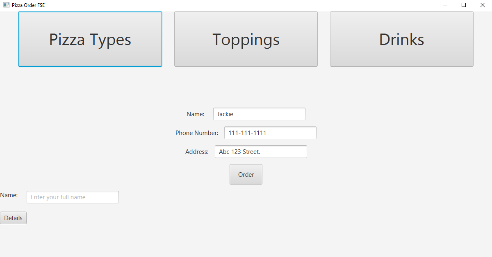
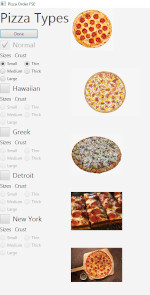

Pizza Menu Project
 This is my Pizza Menu Project coded in Java using JavaFX. Using basic clickable buttons and interactive selections, the user is allowed to select their preferences from the variety of choices and can later save it into a text file and reload all the information. It has simple graphics, but it is readable and easy to follow without instructions. There can be as little to as many different combinations of orders and simply typing the exact name you inputted will bring up all your information from when you last submitted.
Paint Project

This is my Paint Project coded in Python with Pygame. This program is designed to look similar to Microsoft Paint and allows for saving, loading, redo and undo. It detects when the user has made a selection with a left mouse click. Once a tool has been chosen, the user can draw whatever they would like onto the canvas and can save it for later uses. There are a few stamps that you can drag and drop onto the canvas as everything is within a specified theme.
Everything is coded by me, Jackie Li and you can download the source code and files by clicking here or pasting this link. github.com/Jackie12321